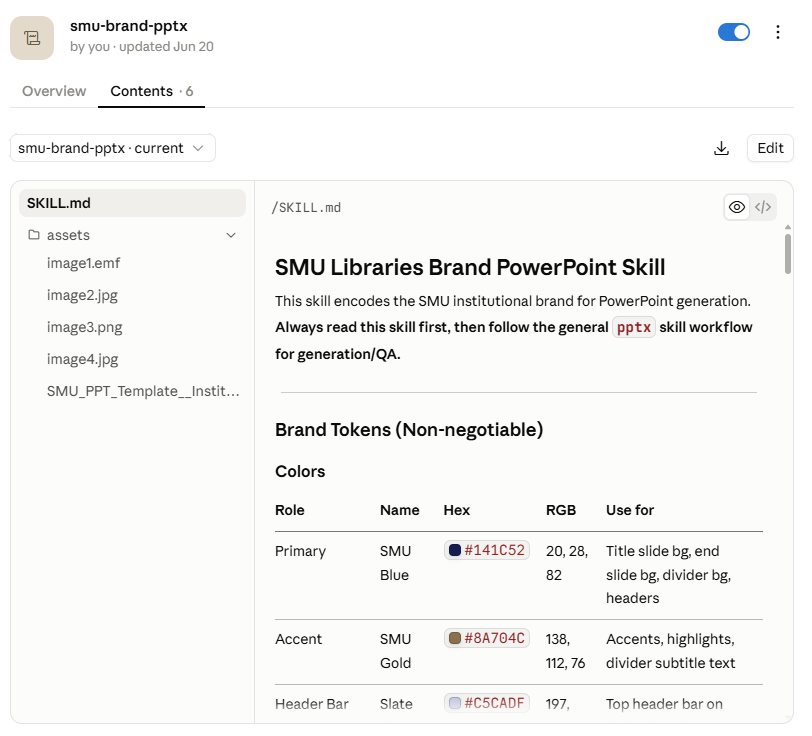

Getting started with agentic AI for research
Questions and corrections welcome. Let’s make it two-way exchange!
Quick show of hands:
Ideally, before today you have:
No Claude Code or Codex? Please pair up with someone who has it.
If pairing, one person drives and the other checks the plan, permissions, and output. Swap when useful.
If you can’t defend it without the AI in the room, you’re not done.
| Term | What I mean |
|---|---|
| Model | The AI itself (Claude, GPT). Reads text, writes text |
| Harness | The app around the model (Claude Code, Codex, claude.ai). Decides what it can see, touch and run |
| Agent | Model + harness, working through a task in steps. You set the task and check the work |
| Context | Everything the model can see in this session. Not long-term memory |
| Tool | One action the harness allows: read a file, run code, search |
| Connector (MCP) | A plug-in that lets the agent search an outside source: PubMed, Zotero, Drive |
| Skill | A saved prompt for a recurring task, in a SKILL.md file |
Most of us are familiar with the I type, it answers pattern.
Three new ideas today:
| Capability | The idea | What it means for you |
|---|---|---|
| It can act | Agents plan and take steps, not just a quick reply | Hand over a task instead of a question |
| It can reach things | Connectors extend access to outside services and sources | Results retrieved from identifiable sources, not only model memory |
| It can follow your procedures | Skills hold your instructions / prompt | The same documented instructions every time |
is like a colleague on the phone.
is like a research assistant at your desk.
| Web chat (Claude.ai / ChatGPT.com) | Claude Code / Codex |
|---|---|
| Runs in a browser | Runs on your computer, in your project folder |
| Sees only what you paste or upload | Reads files directly from the project folder and can examine how they relate |
| Hands you text and code to copy back | Creates, edits and organizes files itself |
| You run the output yourself | Runs scripts and commands, with your permission |
| Best for questions and one-off outputs | Best for multi-step work i.e. act, check, continue |
Claude Code and Codex aren’t automatically better than web chat. They have more access and more ability to act, which is why permissions, checkpoints and your review matter even more.
| Ask | Think about |
|---|---|
| May I use it? | Consent, IRB/ethics approval, platform expectations, confidentiality |
| May this tool receive it? | Institutional approval, provider terms, retention and training settings |
| What’s the minimum it needs? | De-identify, minimise, aggregate, or use fictional / synthetic material |
| What must stay with me? | Interpretation, contextual judgement, inclusion decisions, final claims |
“Local” ≠ private. While the files stay on your machine, remember that what the agent reads is sent to the model provider.
Public ≠ unrestricted. Publicly visible posts aren’t automatically ethically unrestricted, context-free, or fine to send to a third-party model.
Think of context as the agent’s desk.
Habits: fresh session per task · instructions in a file · ask for a progress summary
The useful question isn’t “which product?” but where does it run, and what can it touch?
| Option | Where it runs |
|---|---|
| Local | Your computer: your files, your terminal. The default option and what we use today |
| Cloud | The provider’s machine. Good for long tasks; starts from a fresh copy, so it can’t see your local folders |
| Mode | What it does |
|---|---|
| Plan | Investigates and writes a plan before changing anything |
| Manual | Asks before every action that changes something |
| Accept edits | File edits go through; other actions still ask |
| Auto | Proceeds on safe actions, pauses on riskier ones |
| Bypass | Never asks. Not for today |
For research work, start in Plan mode.
Read the plan the way you’d read a research assistant’s proposal, then let it act.
5 min · Plan mode
Open the workshop folder in Claude Code or Codex, then:
Look for:
Without a connector: without access to a retrievable source, it may rely on model knowledge, which can be outdated or wrong.
With a connector: it searches a live source and can show you where each result came from.
A connector acts with your access. A word of caution: Treat it like a browser extension and check who made it before you switch it on.
Before: keep your best prompts in a doc, paste them into the chat every time.
Now: save it once as a Skill, call it by name, and the agent works through the steps, reading files and running scripts as it goes.
| Pasted prompt | Skill | Python script |
|---|---|---|
| Retyped, drifts each time | Saved once, same instructions every run | Same code every run |
| Text only | Uses the agent’s tools, can bundle scripts | Does exactly what’s written |
| Flexible, hard to repeat | Flexible, with repeatable instructions | Most deterministic, least flexible |
Not as fixed as a python script, but it can deal with the messy case a script can’t. Useful for things like coding scheme or screening criteria.
Ask a plain chatbot for references and you’ll often get:
A connector improves provenance: you can see where a result came from. It doesn’t show that the source supports the claim. Finding, coverage and interpretation are separate checks.
| Source | Covers | Connect via |
|---|---|---|
| PubMed | Biomedical and life sciences | Connector directory |
| Consensus | Broad, built on Semantic Scholar / OpenAlex data | Connector directory |
| alphaXiv | arXiv preprints | Connector directory |
| Zotero | Your own saved library | Community MCP server |
| Your library’s databases | Licensed content (Scopus, WoS, publisher platforms) | Mostly not reachable. Use the library |
For advanced users: an open API such as OpenAlex can also be incorporated into a custom workflow.
/mcp and check it says ConnectedMissing? Type /status: you need to be logged in with your claude.ai account, not an API key.
/mcp and check it’s listedIn a terminal instead: codex mcp add <name> --url <address>
Menus change often. Checked October 2026 against the Claude Code and Codex docs.
Connector on: Consensus (or PubMed for health topics).
Find recent (2020 onwards) peer-reviewed papers that use digital
ethnography to study online communities.
Return a table: citation, year, type (empirical / review / methods /
opinion), and a one-sentence finding. Give the DOI for each.
Only include papers you actually retrieved from the search.
Do not fill gaps from memory. Tell me which source each came from.The connector finds things. You still judge them.
Is it real and is it right?
Is it any good for my purpose?
Ask the AI to help with the second column too (“flag preprints and anything you can’t confirm is peer-reviewed”), then spot-check its flags.
TRY · 5 min · pairs
DISCUSS · 5 min
Deductive coding: you already have a codebook and want to apply it.
Useful for sorting, tagging, and applying stated definitions across larger collections.
Inductive or interpretive work: building themes from scratch and reading what is not said.
Here, your judgement is the method.
A fast, literal research assistant: useful for a first cut, shaky on subtext.
| Study | What they did | What they found |
|---|---|---|
| Xiao et al. (2023) | Expert codebook + GPT-3 on children’s questions | Fair to substantial agreement with expert coders |
| Chew et al. (2023) | LLM-assisted content analysis on four public datasets | Often comparable to human coders; also exposed codes the model was only guessing |
| Gilardi et al. (2023), PNAS | ChatGPT annotating about 6,000 tweets and news articles | Outperformed crowd workers on the tasks examined |
| Pangakis et al. (2023) | GPT-4 replicating 27 coding tasks from published studies | Good on some tasks, poor on others: validate every task |
| De Paoli (2024), SSCR | GPT-3.5 doing inductive thematic analysis of interviews | Recovered many themes from the original studies; exploratory |
| Ashwin et al. (2025), SMR | LLM coding of Rohingya refugee interviews | Errors were not random: they varied with who was speaking |
Six fictional field notes from a Singapore hawker-food Telegram group, coded with boyd’s networked-publics affordances:
| Code | Apply when | Not when |
|---|---|---|
persistence |
Old posts resurface; content cannot be deleted; people refer back | Memory or nostalgia alone |
visibility |
Who can see it; public versus private; audiences collide | Content is simply posted |
spreadability |
Forwarding, reposting, screenshots, or cross-posting | Content is viewed but not moved |
searchability |
Platform search shapes what is findable | Looking something up offline |
other: ... |
Something these codes miss and you can name | A dumping ground |
Rules: quote the exact words for every code · “nothing fits” is allowed · flag anything identifying
Full codebook: materials/skills/qual-coding/SKILL.md · notes: materials/data/fieldnotes.csv
TRY · 7 min · alone · no AI
[FN-02] 6 Mar, 12.30pm. A new member asked whether a char kway teow
stall at a hawker centre in Ang Mo Kio is "still good". Three people
replied with links to old messages in the group from 2023. One wrote
"scroll up lah, we discussed already". The new member said the search
bar "doesn't find anything" when she types the stall name in Chinese.
[FN-04] 19 Mar, 7.05pm. The Instagram account reposted a member's
review without crediting them. The member complained in the Telegram
group: "I wrote it for the group, not for IG." Admin apologised and
said they would "ask first next time". Several members reacted with
the thumbs-up emoji; one wrote "but the IG is public what, anyone
can see anyway".For each decision: excerpt · code · exact words · confidence (high / medium / low)
You do not need to identify every possible code. Make one or two defensible coding decisions for each excerpt.
A Skill is the written procedure from Part 1, saved so the agent can apply it again.
For this task, it preserves:
The Skill does not make the coding valid or deterministic. It preserves the instructions we want to test.
(using qual-coding-networked-publics)
Look for:
other:?DISCUSS
Agreement is not interpretive validity. A model can apply a code consistently and still miss context, positionality, platform vernacular, or what is absent from the record.
BUILD TOGETHER · follow along if useful
/skill-creator
Revise the qualitative-coding Skill using the codebook clarification
we just agreed. Then generalise it as a Skill called code-with-codebook.
It should ask for:
- a codebook with each code's definition, when to apply it, and when not to;
- a CSV containing an ID column and a text column.
For every coding decision, save: id, code, verbatim evidence,
confidence, rationale, and an identifying-information flag.
"Nothing fits" is allowed. Log the model, date, input files and
number of rows in research-log.md.We tested the procedure, improved it, and saved the revision.
TEST · first 20 rows only
Before scaling, inspect:
Coding side by side with another coder
You, the AI and a codebook can discuss each note.
Applying the procedure across an archive
The Skill codes every message; a script checks the output and logs the run.
Same method: codebook → AI codes → human check → revise → test again.
Best when the task needs interpretation:
Repeatable instructions; outputs may vary.
Best when the operation can be fully specified:
Fixed code for fixed operations.
For judgement at scale:
WATCH THE WORKFLOW · no Python knowledge required
The first 20 looked right, so the Skill codes all 210 messages. Then:
Write a Python script that checks coded-messages.csv against
messages.csv: every message_id appears at least once, every row
has id, code, evidence and confidence, and every evidence quote
appears word for word in the original message. Run it, list any
problems, and log the date and result in research-log.md.Watch for: plan → write → run → inspect → adjust → rerun
| Move | What it looks like |
|---|---|
| Validate against human coding | Hand-code an appropriate sample, compare, and inspect disagreements |
| Revise the codebook | Clarify vague definitions and exclusions exposed by disagreements |
| Route uncertainty to people | Send low-confidence, unclear and identifying cases to manual review |
| Document the run | Keep the data, codebook or Skill, model/version, date, outputs and decisions |
A seed makes a random sample retrievable, not methodologically correct by itself.
| Keep | Example from today |
|---|---|
| The data or retrieval method | de-identified fieldnotes.csv and messages.csv, with export date |
| The procedure | codebook.md, the Skill and the check script |
| The checks | human codes, AI codes, disagreements and agreement summaries |
| The decisions | accept / reject / modify decisions; codebook revisions and reasons |
| The tool details | model/version, settings and date run |
Save, inspect, reuse and describe the codebook, Skill, script and decision log. Do not rely on a chat transcript as the research record.
Tell the agent: “After each step, draft a dated entry in research-log.md.”
Add a reflexive note: What did the tool make more visible? What did it flatten, obscure, or encourage you to treat as data?
Treat the agent’s log as a draft. Check and correct it.
Where the file lives
.claude/skills/ in the project folder~/.claude/skills/The Skill is a text file you can inspect, version and retain with the project.

Check: show me where that came from
Record and disclose
Sensitive data: participant data, unpublished results and confidential material require appropriate approval and a suitable tool before use. Publicly visible is not the same as ethically unrestricted.
We used [tool and model] on [date] to propose provisional codes for de-identified field-note excerpts using the codebook in Appendix A. The researcher reviewed every code against the original text, revised the codebook after disagreement analysis, and retained final interpretive responsibility.
A generic example. Adapt it to the requirements of the course, institution, journal, funder and study.
If you cannot defend it without the AI in the room, you are not done.
Hand over the task | Check what comes back | Keep the procedure
Try next: write one repeated research task as a documented procedure. Turn it into a Skill only if useful.
Slides: NTU Digital Ethnography guest seminar
Questions? My email is bellar@smu.edu.sg
Sample field notes and chat messages in this session are fictional and were written for teaching purposes.
Ashwin, J., Chhabra, A., & Rao, V. (2025). Using large language models for qualitative analysis can introduce serious bias. Sociological Methods & Research. https://arxiv.org/abs/2309.17147
boyd, d. (2010). Social network sites as networked publics: Affordances, dynamics, and implications. In Z. Papacharissi (Ed.), A networked self (pp. 39–58). Routledge.
Chew, R., Bollenbacher, J., Wenger, M., Speer, J., & Kim, A. (2023). LLM-assisted content analysis: Using large language models to support deductive coding. arXiv:2306.14924. https://arxiv.org/abs/2306.14924
De Paoli, S. (2024). Performing an inductive thematic analysis of semi-structured interviews with a large language model. Social Science Computer Review, 42(4), 997–1019. https://doi.org/10.1177/08944393231220483
Gilardi, F., Alizadeh, M., & Kubli, M. (2023). ChatGPT outperforms crowd workers for text-annotation tasks. PNAS, 120(30), e2305016120. https://doi.org/10.1073/pnas.2305016120
Pangakis, N., Wolken, S., & Fasching, N. (2023). Automated annotation with generative AI requires validation. arXiv:2306.00176. https://arxiv.org/abs/2306.00176
Xiao, Z., Yuan, X., Liao, Q. V., Abdelghani, R., & Oudeyer, P.-Y. (2023). Supporting qualitative analysis with large language models: Combining codebook with GPT-3 for deductive coding. IUI ’23 Companion. https://arxiv.org/abs/2304.10548
.env fileIf the folder may be shared or committed to Git, exclude .env. If a key has been exposed, revoke it and create a replacement.
23 October 2026 - Guest seminar for Digital Ethnography